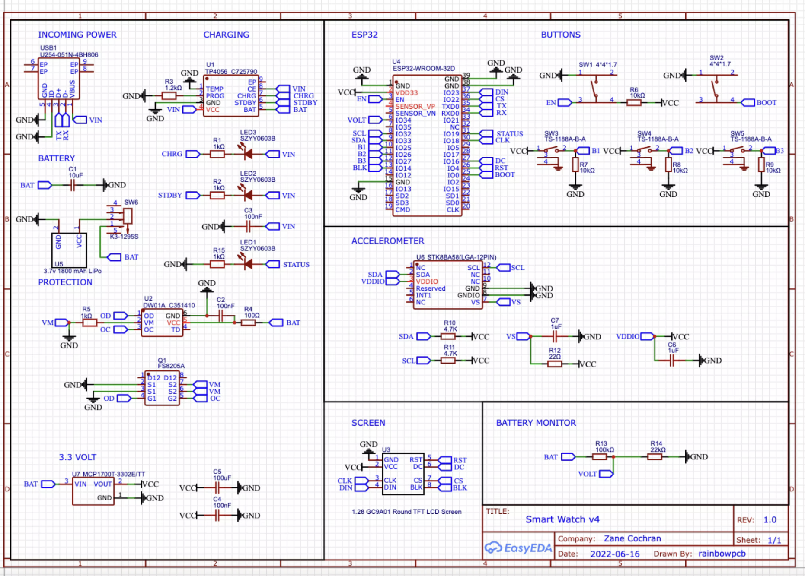
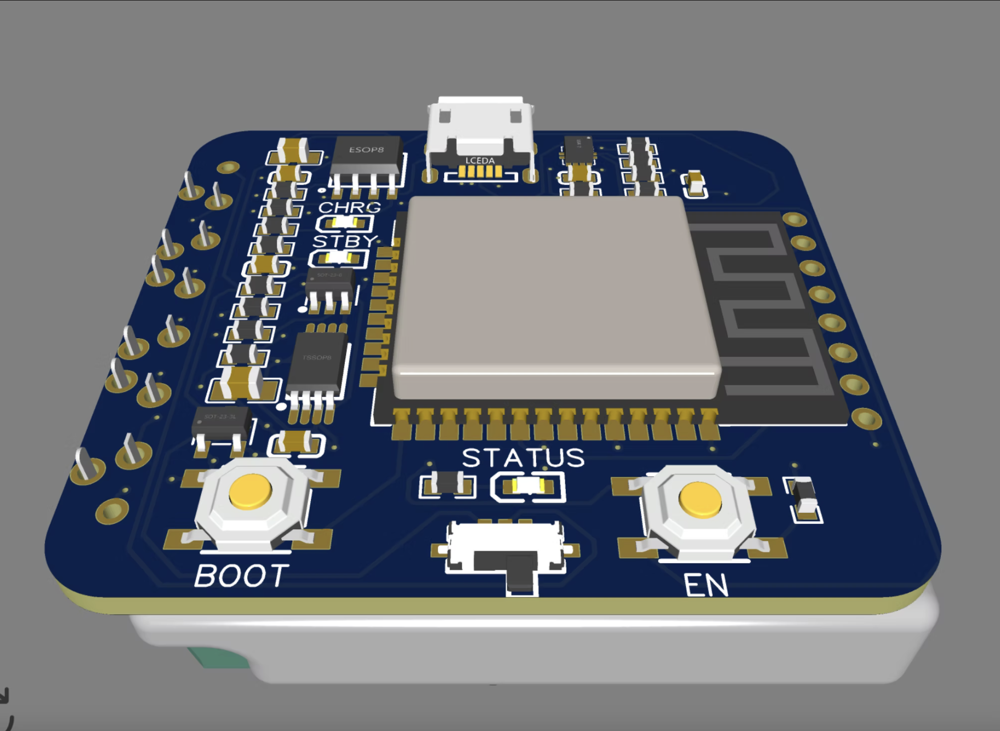
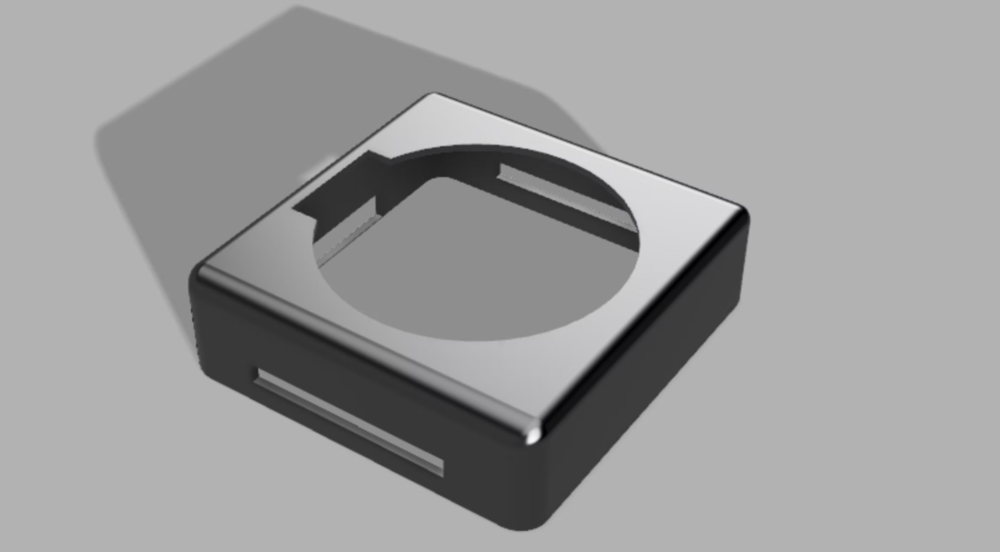
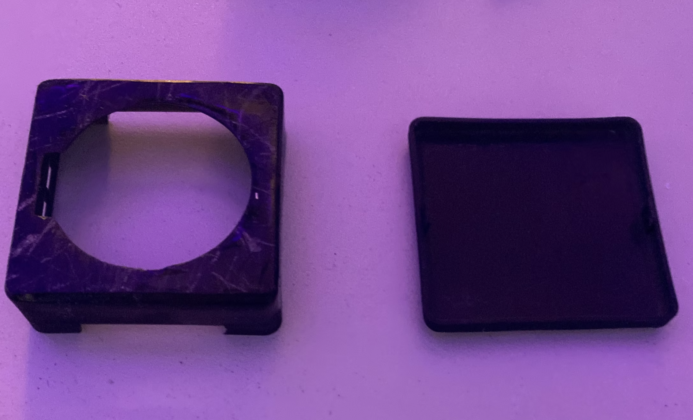
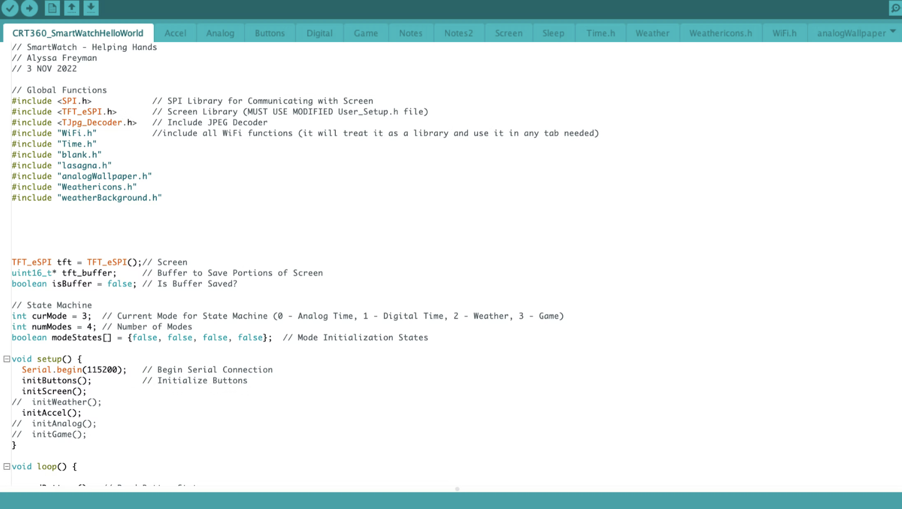
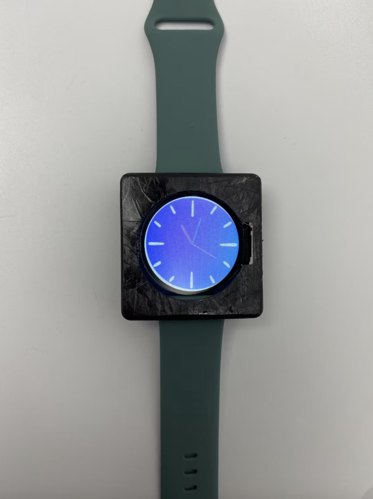
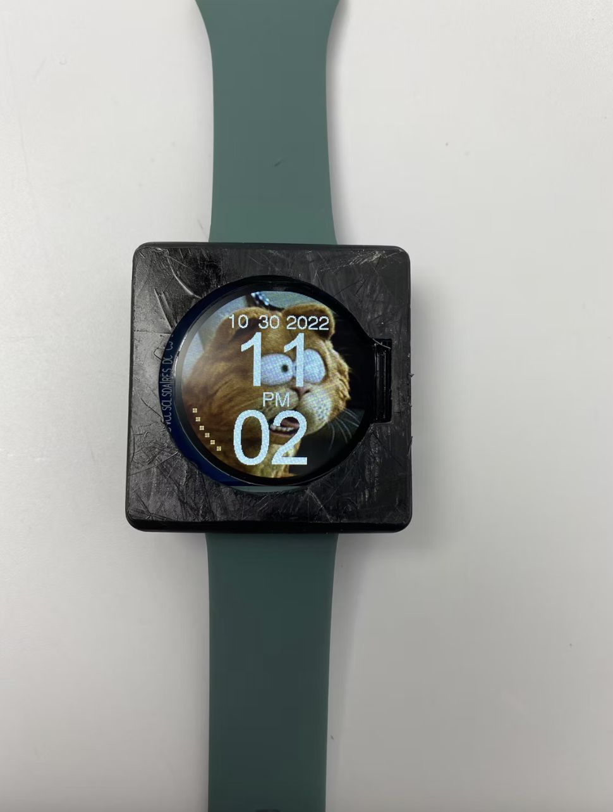
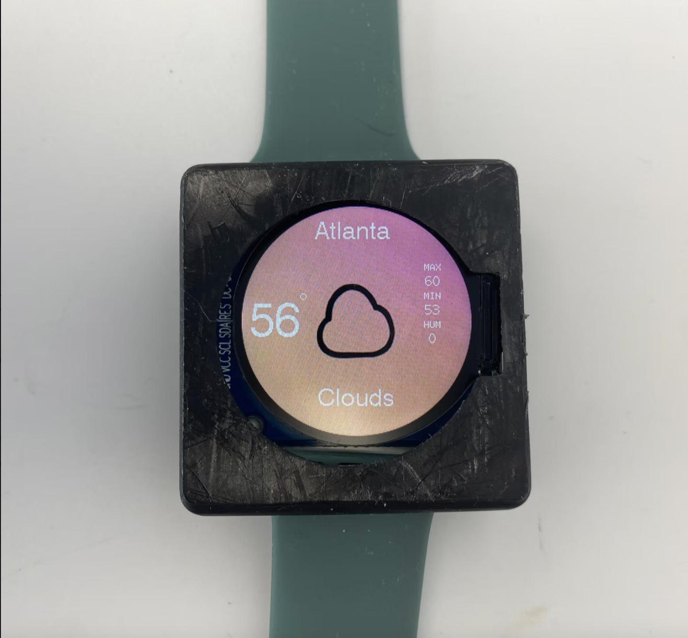
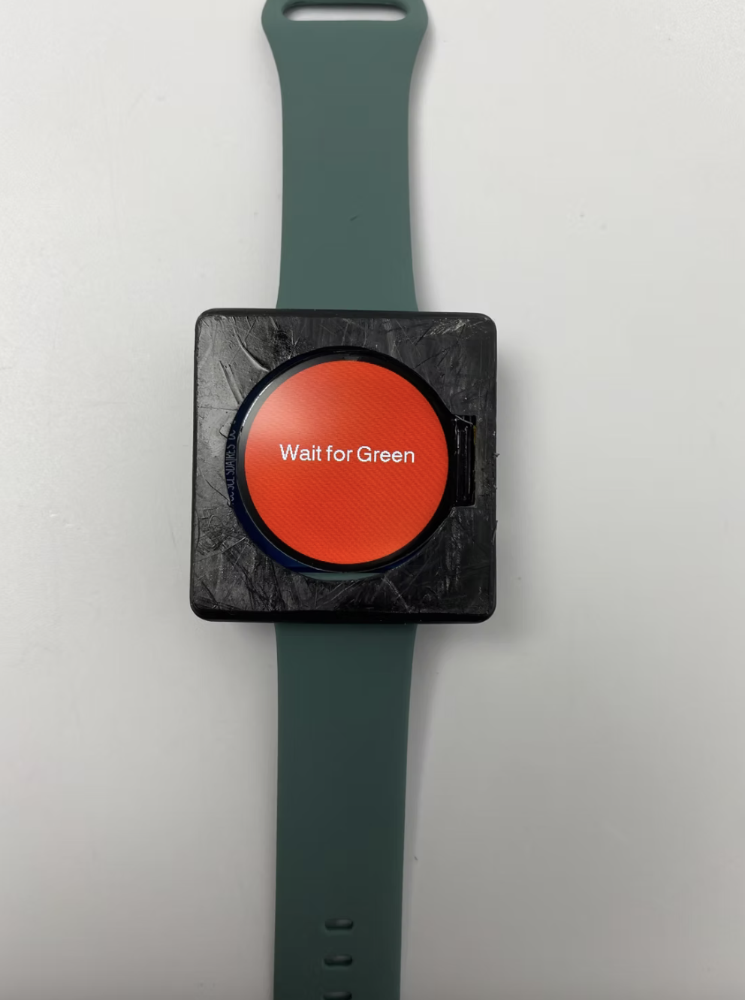
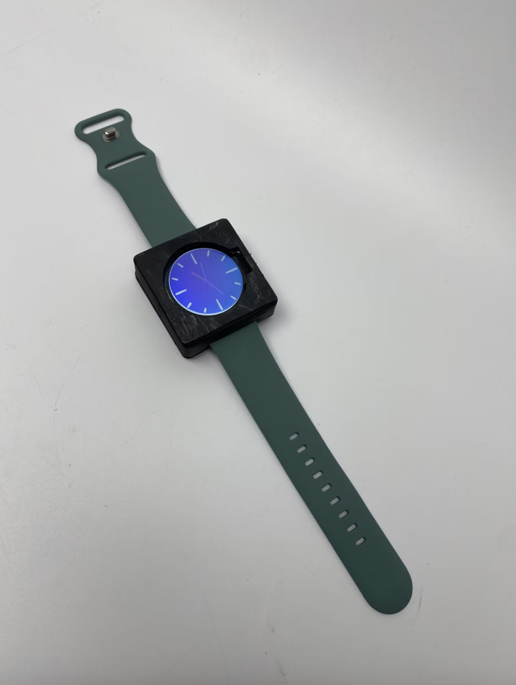

❮
❯
— Physical Prototyping & Interaction Design
A fully functional smartwatch built from the ground up — custom PCB schematic, 3D printed enclosure, and four programmed screens including an analog clock, digital clock, real-time weather app, and a reaction-time game.
— 01
Building a wearable device from scratch requires coordinating hardware, software, and physical design simultaneously — a constraint that forces every decision to account for all three layers at once. A PCB layout choice affects what's possible in the enclosure. An enclosure dimension affects button placement. Button placement affects the interaction model in code.
The goal was to produce a fully functional smartwatch — not a mockup or simulation — with a real PCB, a 3D printed case that fit correctly, and firmware that ran reliably across four distinct interaction modes.
— 02
Before any physical work began, I completed three parallel planning tracks — schematic design, enclosure design, and UI moodboarding — so that all three dimensions of the project could be developed with awareness of each other.
The watch used a 4-layer PCB. The component layout and part list were provided by the professor; my task was to design all the wire connections between components in EasyEDA, producing a clean schematic that could be manufactured reliably.
I designed the full watch enclosure in Fusion 360, including watchband slots and cutouts for the display and three side buttons. The design had to account for the exact dimensions of the PCB and components to ensure everything fit correctly once assembled.
Before writing any code, I researched existing watch and app design for visual inspiration — looking at color palettes, typography choices, and layout conventions across consumer smartwatches. I created a moodboard for each of the four screens to establish a consistent visual language before implementation.

The 4-layer PCB schematic designed in EasyEDA, showing all component wire connections.

2D rendering of the final PCB layout before fabrication.

Side-view 3D render of the watch enclosure in Fusion 360, showing the watchband slot and button cutouts.

The 3D printed enclosure prototype used to verify fit before final assembly. Adjustments were made based on how components seated inside.
— 03
The watch firmware was written in Arduino (C++) across 19 separate tabs, each handling a distinct part of the system. The three physical side buttons were mapped to specific functions across all modes:

— 04
Each of the four screens was designed with its own visual identity, informed by the moodboarding phase. The goal was for each mode to feel purposefully designed rather than like a default UI dump.

A blue/purple color scheme with traditional hour and minute hands. Inspired by premium watch face aesthetics.

Clean digital time display with date and secondary information — designed for fast readability.

Pulls live weather data for Atlanta, displaying current conditions with icons and temperature in real time.

Screen starts red — press Button 3 as fast as possible when it turns green. Reaction time is displayed in milliseconds, then resets.
— 05
The assembled watch combines the fabricated PCB, 3D printed enclosure, and all programmed firmware into a single wearable device. The enclosure fits the PCB cleanly with all three buttons accessible and the display seated correctly behind the screen cutout.

— 06
A demonstration of all four screen modes in action — including the live weather data pull and the reaction-time game.
— 07
This project was my first experience designing at the hardware level — where design decisions are physical and irreversible in a way that software never is. Getting the enclosure dimensions wrong by a millimeter means reprinting. Getting a wire connection wrong in the schematic means the board doesn't work. That constraint forces a kind of precision and forethought that I found genuinely different from purely digital work.
The most satisfying part was seeing all three layers — hardware, software, and physical design — come together into something you can actually wear. Building a functioning wearable device from a blank schematic is a very different experience from designing an interface in Figma, and it gave me a much deeper appreciation for the engineering constraints that sit beneath every consumer product.